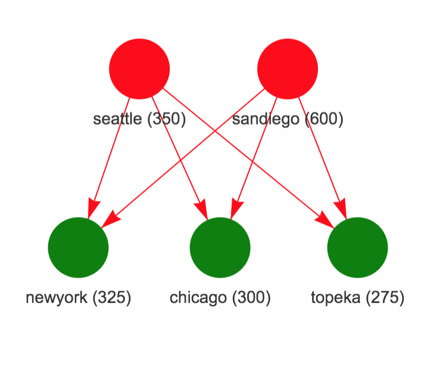
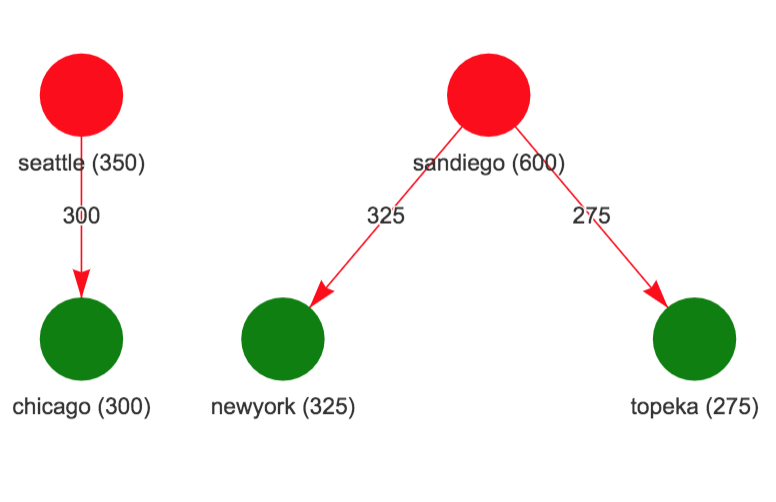
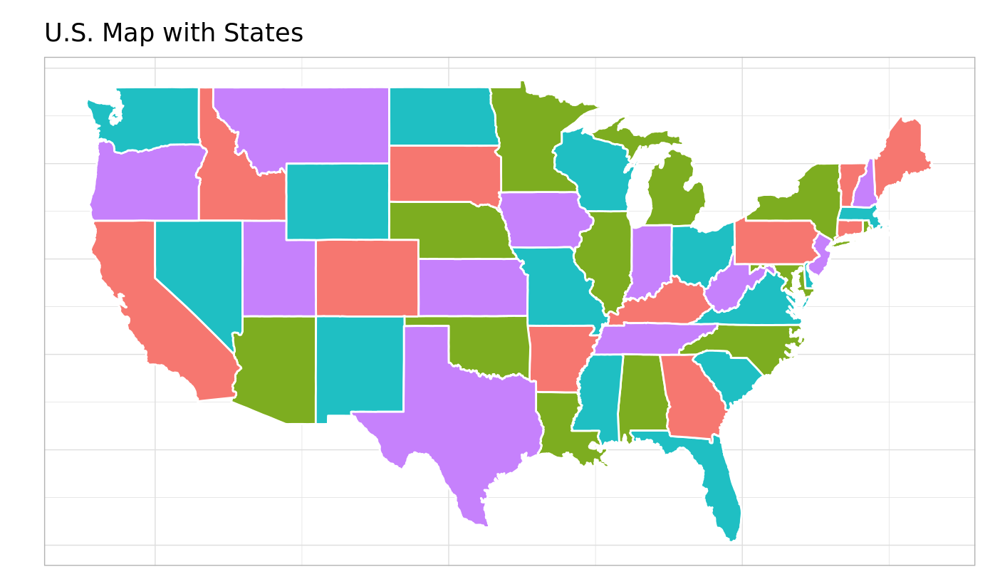

mdl = MIPModel() %>%
add_variable(x0, lb = 0, ub = 4, type = "continuous") %>%
add_variable(x1, lb = 1, type = "continuous") %>%
set_objective(x0+x1+3) %>%
add_constraint(x1 <= 7) %>%
add_constraint(x0 + 2*x1 <= 15) %>%
add_constraint(x0 + 2*x1 >= 5) %>%
add_constraint(3*x0 + 2*x1 >= 6)Exploring OMPR with HiGHS solver
There is a class of software for modeling optimization problems referred to as algebraic modeling systems which provide a unified interface to formulate optimization problems in a manner that is close to mathematical depiction and have the ability to link to different types of solvers (sparing the user from solver specific ways of formulating the problem). Both commercial and open source options are available. GAMS and AMPL are examples of commercial options. The popular open source options are JuMP in Julia and Pyomo in python. I have typically used Pyomo in Python but have explored using it from R. I recently became aware of algebraic modeling system in R provided by OMPR package.
There are commercial and open-source options available for solvers also. For a class of optimization problems referred to as Mixed Integer Linear Programs (MILP), the commercial solvers such as CPLEX, and GUROBI perform significantly better than open source solvers such as glpk, and CBC. A new open-source solver HiGHS has been developed recently that has generated quite a bit of buzz and by different accounts looks like a promising option. There is now a highs package in R that can call the HiGHS solver.
In this blog, I wanted to explore using OMPR modeling system with HiGHS solver by using it to solve a few examples of LP/MILP problems.
Example 1: Example from highs package
Here I want to just describe the example in mathematical notation and show how OMPR model is close to mathematical notation. The full details of this example are in this location.
Example Problem in highs package
\[ \begin{array}{ll} \min & x_0 + x_1 + 3 \\ & x_1 \leq 7 \\ & 5 \leq x_0 + 2x_1 \leq 15 \\ & 6 \leq 3x_0 + 2x_1 \\ & 0 \leq x_0 \leq 4 \\ & 1 \leq x_1 \end{array} \]
OMPR model
OMPR integrates with ROI package to solve an optimization model since ROI package has several solver plugins. However, highs solver doesn’t appear to have a ROI plugin yet.
The highs solver uses the following representation of the optimization problem:
\[ \begin{array}{ll} \min &Lx + x^tQx + offset \\ &lhs \leq Ax \leq rhs \\ &lower \leq x \leq upper \\ &x \in \{integer, continuous\} \end{array} \]
So I adapted the as_ROI_model function from package ompr.ROI to provide the information needed \((L, offset, A, lhs, rhs, lower, upper)\) and type of each \(x\) variable for calling solver in highs package.
# Convert ompr model to highs model
highs_mdl = as_highs_model(mdl)
# solve highs model
s <- highs_solve(L = as.numeric(highs_mdl$L), lower = highs_mdl$lower, upper = highs_mdl$upper,
A = highs_mdl$A, lhs = highs_mdl$lhs, rhs = highs_mdl$rhs,
offset = highs_mdl$offset)
s[["status"]]
s[["objective_value"]]
s[["primal_solution"]]Solving the above problem results in an objective value of 5.75 and solution of (0.5, 2.25)
Example 2: Transportation Problem
This example discusses a transporation problem from GAMS model library where the goal is to find the minimum cost way to meet market demand with available plant capacity. We just show how the OMPR package can handle variables involving indices using this example. The full description of this example is in this location.
\[ \begin{array}{llr} \min &\sum_{p=1}^P\sum_{m=1}^Mc_{pm}x_{pm} & (a) \\ &\sum_{m=1}^Mx_{pm} \leq cap_p, \;p=1,2,\ldots,P & (b)\\ &\sum_{p=1}^Px_{pm} \geq dem_m, \;m=1,2,\ldots,M & (c) \\ &x_{pm} \geq 0, \;p=1,2,\ldots,P;\;m=1,2,\ldots,M \end{array} \]
where
- \(x_{pm}\) is the quantity to be shipped from plant \(p\) to market \(m\) (decision variable)
- Objective (a) is to minimize shipping cost
- Constraint (b) ensures that total supply from a plant is below capacity
- Constraint (c) ensures that demand for each market is met.
np = length(plants)
nm = length(mkts)
# create ompr model
mdl = MIPModel() %>%
add_variable(x[i, j], i=1:np, j=1:nm, type = "continuous",lb = 0) %>%
# objective: min cost
set_objective(sum_over(cost(i, j) * x[i, j], i = 1:np, j = 1:nm)) %>%
# supply from each plant is below capacity
add_constraint(sum_over(x[i, j], j = 1:nm) <= cap[i], i = 1:np) %>%
# supply to each market meets demand
add_constraint(sum_over(x[i, j], i = 1:np) >= dem[j], j = 1:nm)The figure on the left show the supply network (plants on top and markets below with numbers being capacity for plants and demand for markets). The figure on the right shows the solution where Chicago market is supplied by Seattle plant and San Diego plant supplies both New York and Topeka markets.
Network Information 
Solution 
Example 3: Map Coloring Problem
This example discusses a map coloring problem where the goal is to use the minimum number of colors so that no two adjacent states in the US map have the same color. In this example also, I am just showing the mathematical formulation and OMPR model. The full description of this example is in this location.
\[ \begin{array}{llr} \min & \sum_{c=1}^Cy_c & (a)\\ & \sum_{c=1}^Cx_{ic} = 1, \;i=1,2,\ldots,N & (b)\\ & x_{ic} + x_{jc} \leq y_c, \; \mbox{when }i, j \mbox{ are adjacent} & (c)\\ & x_{ic} \; binary \\ & y_c \; binary \end{array} \]
where:
- \(y_c=1\) if color \(c\) is used, \(x_{ic}=1\) if state \(i\) is colored with color \(c\).
- Objective (a) is to minimize the number of colors used
- Constraint (b) ensures that each state gets some color
- Constraint (c) ensures that if state \(i\) and \(j\) are adjacent, they don’t get the same color.
# OMPR model
ns = nrow(nodes_df)
nc = 4
edge_str = edge_df %>% mutate(edge_str = glue("{fromid}_{toid}")) %>% pull(edge_str)
mdl = MIPModel()
mdl = mdl %>% add_variable(x[i, c], i = 1:ns, c = 1:nc, type = "integer", lb = 0, ub = 1)
mdl = mdl %>% add_variable(y[c], c = 1:nc, type = "integer", lb = 0, ub = 1)
mdl = mdl %>% set_objective(sum_over(y[c], c=1:nc))
mdl = mdl %>% add_constraint(sum_over(x[i, c], c = 1:nc) == 1, i = 1:ns)
mdl = mdl %>% add_constraint(x[i, c] + x[j, c] <= y[c], i = 1:ns, j = 1:ns, c = 1:nc, glue("{i}_{j}") %in% edge_str)Solving this problem give the following map coloring
